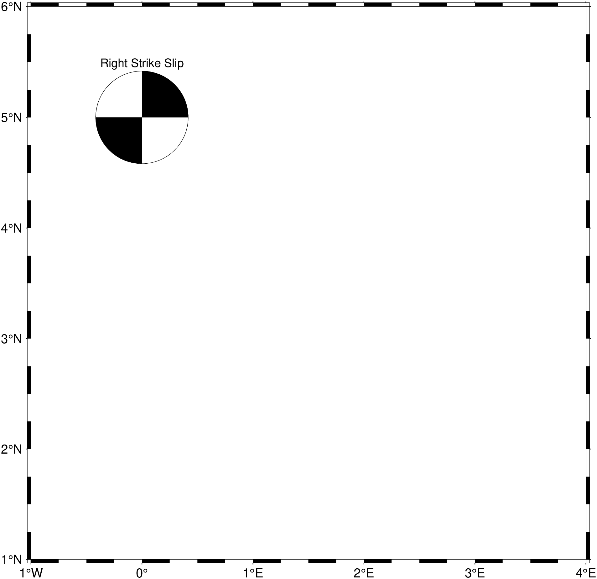
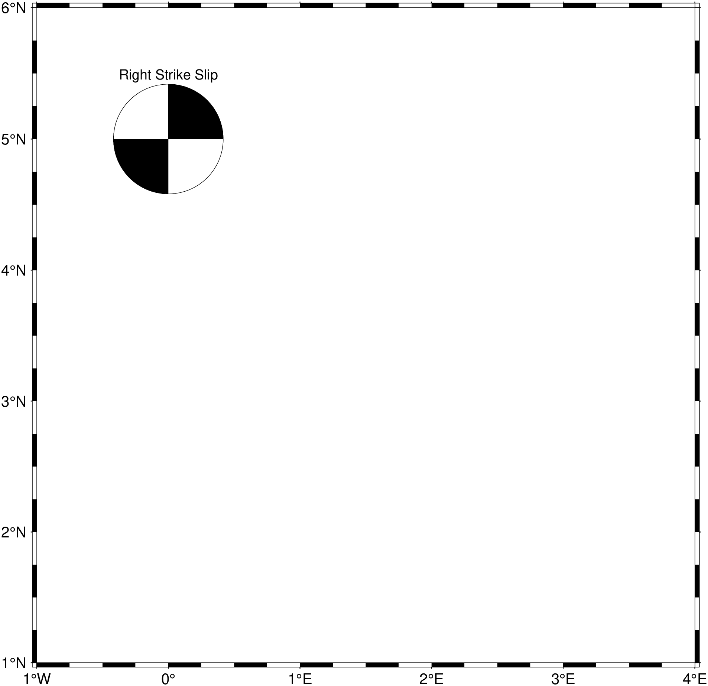
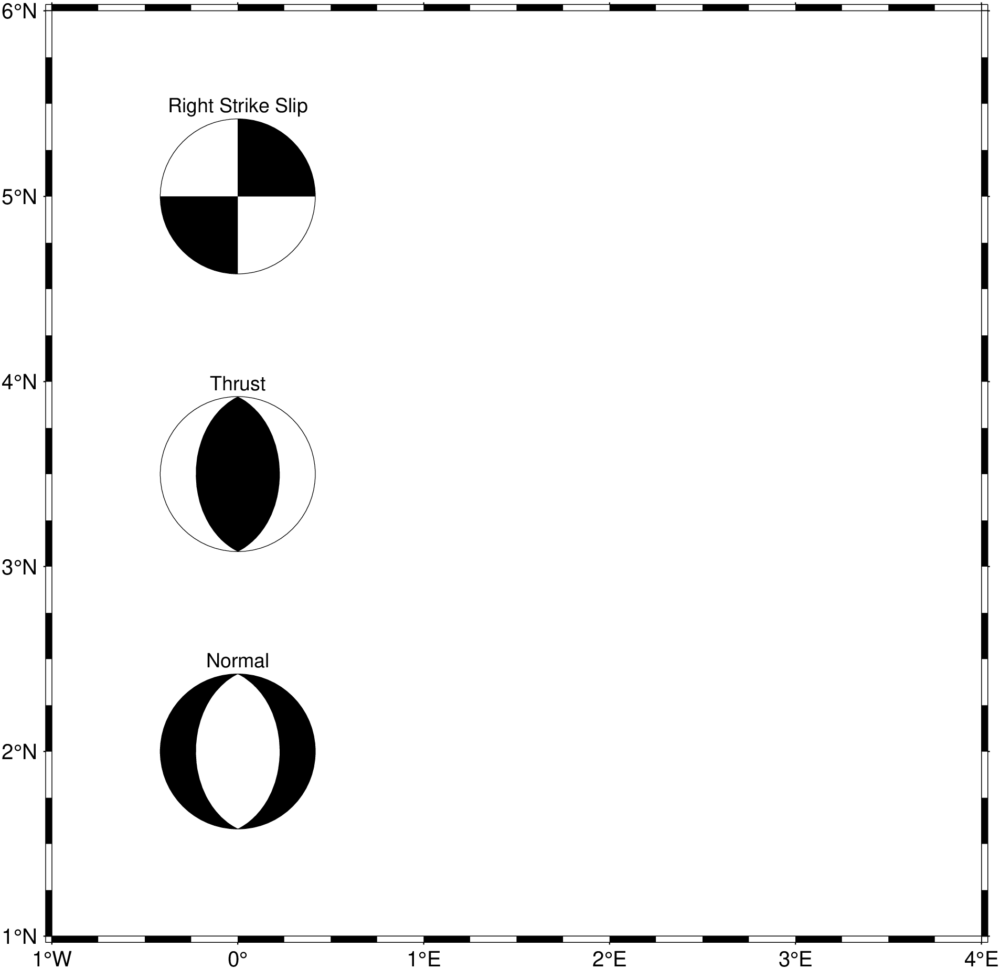

using GMT
# Create focal mechanism data
D = mat2ds([0.0 5.0 0.0 0 90 0 5 0 0], ["Right Strike Slip"])
# Plot with fixed size beachballs
meca(D, region=(-1,4,1,6), proj=:Mercator, aki=2.5, fill=:black, show=true)
meca - Plot focal mechanisms
Reads data values from tables or input arguments and plots focal mechanisms (beachballs). The module reads focal mechanism parameters and plots the corresponding beachballs on a map. Several input format conventions are supported: Aki & Richards, Global CMT, moment tensor, partial focal mechanism, and principal axis.
Columns: lon, lat, depth, strike, dip, rake, magnitude, newlon, newlat, text
Columns: lon, lat, depth, strike1, dip1, rake1, strike2, dip2, rake2, mantissa, exponent, newlon, newlat, text
Columns: lon, lat, depth, mrr, mtt, mff, mrt, mrf, mtf, exponent, newlon, newlat, text
Columns: lon, lat, depth, strike1, dip1, strike2, fault_type, magnitude, newlon, newlat, text
Columns: lon, lat, depth, T_value, T_azim, T_plunge, N_value, N_azim, N_plunge, P_value, P_azim, P_plunge, exponent, newlon, newlat, text
table
A data table (or matrices/datasets) containing focal mechanism parameters. The format depends on the convention specified.
J or proj or projection : – proj=
Select map projection. More at [proj](../common_opts/opt_J.html)
R or region or limits : – limits=(xmin, xmax, ymin, ymax) | limits=(BB=(xmin, xmax, ymin, ymax),) | limits=(LLUR=(xmin, xmax, ymin, ymax),units=“unit”) | …more
Specify the region of interest. More at [limits](../common_opts/opt_R.html). For perspective view view, optionally add zmin,zmax. This option may be used to indicate the range used for the 3-D axes. You may ask for a larger w/e/s/n region to have more room between the image and the axes.
S or convention : Convention-specific options
Selects the input convention and symbol size. Choose from:
Append scale to set the symbol size. Use tuple form to add modifiers:
aki=(scale=val, ...) or CMT=(scale=val, ...) etc.Available modifiers (as named tuple elements):
A or offset : – offset=true | offset=(fill=…, offset=.., pen=…, size=…)
Offsets beachballs to the longitude, latitude specified in the last two columns of the input. A line connects the original and relocated positions. Available modifiers:
B or axes or frame
Set map boundary frame and axes attributes. Default is to draw and annotate left, bottom and vertical axes and just draw left and top axes. More at [frame](../common_opts/opt_B.html)
C or color or cmap : – cmap=cpt
Give a CPT to determine compressive quadrant fill based on depth (3rd column).
D or depth_range : – depth_range=(depmin,depmax)
Plot only events with depths between depmin and depmax.
E or extensionfill : – extensionfill=fill
Selects filling of extensive quadrants [Default is white].
F : – Fa=true | Fa=[size[/Psymbol[Tsymbol]]] , Fe|Fg|Fr=fill , Fp|Ft|Fz=pen , Fo=true
Aliases:
G or fill or extensionfill : – fill=color
Selects filling of compressive quadrants [Default is black].
H or scale : – scale=true | scale=scale
Scale symbol sizes and pen widths on a per-record basis using the scale read from the data file. The symbol size is either provided by convention or via the input size column. Alternatively, append a constant scale that should be used instead of reading a scale column.
I or intens or intensity : – intens=val | intens=:a
Use the supplied intens value (nominally in the ±1 range) to modulate the compressional fill color by simulating illumination [none]. If no intensity is provided we will instead read intens from an extra data column after the required input columns determined by convention.
L or pen_outline : – pen_outline=pen
Draws the “beach ball” outline using specified pen attributes.
M or same_size or samesize : – same_size=true
Use the same size for all beachballs. Size is set from the magnitude columns, but the same size is used regardless of magnitude.
N or no_clip or noclip : – no_clip=true
Do NOT skip symbols that fall outside the map border [Default clips symbols].
T or nodal : – nodal=plane | nodal=(plane=val, pen=…)
Plot nodal planes and circumference only. Specify which plane(s) to draw:
Use tuple form to set pen: nodal=(plane=0, pen=pen_spec)
For double couple mechanisms, the nodal option renders the beach ball transparent by drawing only the nodal planes and the circumference. For non-double couple mechanisms, nodal=0 option overlays best double couple transparently.
U or time_stamp : – time_stamp=true | time_stamp=(just=“code”, pos=(dx,dy), label=“label”, com=true)
Draw GMT time stamp logo on plot. More at [timestamp](../common_opts/opt_U.html)
V or verbose : – verbose=true | verbose=level
Select verbosity level. More at [verbose](../common_opts/opt_V.html)
W or pen : – pen=pen
Set pen attributes for features [Default pen is 0.25p,black,solid]. This setting applies to A, L, T, Fp, Ft, and Fz, unless overruled by options to those arguments. See also [Pen attributes]
X or xshift or x_offset : xshift=true | xshift=x-shift | xshift=(shift=x-shift, mov=“a|c|f|r”)
Shift plot origin. More at [xshift](../common_opts/opt_X.html)
Y or yshift or y_offset : yshift=true | yshift=y-shift | yshift=(shift=y-shift, mov=“a|c|f|r”)
Shift plot origin. More at [yshift](../common_opts/opt_Y.html)
di or nodata_in : – nodata_in=??
Substitute specific values with NaN. More at
e or pattern : – pattern=??
Only accept ASCII data records that contain the specified pattern. More at
h or header : – header=??
Specify that input and/or output file(s) have n header records. More at
i or incol or incols : – incol=col_num | incol=“opts”
Select input columns and transformations (0 is first column, t is trailing text, append word to read one word only). More at incol
p or view or perspective : – view=(azim, elev)
Default is viewpoint from an azimuth of 200 and elevation of 30 degrees.
Specify the viewpoint in terms of azimuth and elevation. The azimuth is the horizontal rotation about the z-axis as measured in degrees from the positive y-axis. That is, from North. This option is not yet fully expanded. Current alternatives are:
bar3!) More at [perspective](../common_opts/opt_p.html)q or inrows : – inrows=??
Select specific data rows to be read and/or written. More at
t or transparency or alpha: – alpha=50
Set PDF transparency level for an overlay, in (0-100] percent range. [Default is 0, i.e., opaque]. Works only for the PDF and PNG formats.
yx : – yx=true
Swap 1st and 2nd column on input and/or output. More at
[focal_mechanisms]
Plot focal mechanisms using Aki-Richards convention:

Plot using Global CMT convention with depth-based coloring:
Plot multiple mechanisms with varying types:
using GMT
# Right lateral strike slip
D1 = mat2ds([0.0 5.0 0.0 0 90 0 5 0 0], ["Right Strike Slip"])
meca(D1, region=(-1,4,1,6), proj=:Mercator, aki=2.5, fill=:black)
# Thrust fault
D2 = mat2ds([0.0 3.5 0.0 0 45 90 5 0 0], ["Thrust"])
meca!(D2, aki=2.5, fill=:black)
# Normal fault
D3 = mat2ds([0.0 2.0 0.0 0 45 -90 5 0 0], ["Normal"])
meca!(D3, aki=2.5, fill=:black, show=true)
Aki, K., & Richards, P. G. (1980). Quantitative seismology: theory and methods. San Francisco: W. H. Freeman.
Dahlen, F. A., & Tromp, J. (1998). Theoretical global seismology. Princeton, N.J: Princeton University Press.
Frohlich, C. (1996). Cliff’s Nodes Concerning Plotting Nodal Lines for P, SH and SV. Seismological Research Letters, 67(1), 16–24, https://doi.org/10.1785/gssrl.67.1.16.
Lay, T., & Wallace, T. C. (1995). Modern global seismology. San Diego: Academic Press.